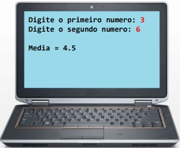

Introdução sobre programação
- Algoritmo:
- Sequencia finita de instruções para se resolver um problema.
- aplica-se a diversas áreas de conhecimento
Exemplo:
problema: Lavar roupa suja
Algoritmo:
- Colocar roupa suja em um recipiente;
- Colocar um pouco de sabao e amaciante;
- Encher de água;
- Mexer tudo até dissolver todo o sabão
- Deixar de molho por vinte minutos
- Esfregar a roupa
- Enxaguar
- Torcer
- Automação:
- Consiste em utilizar máquinas para executar o procedimento desejado de forma automática ou semiautomática.
Exemplo:
problema: Lavar roupa suja
Algoritmo:
- Colocar roupa suja em um recipiente;
- Colocar um pouco de sabao e amaciante;
- Encher de água;
- Mexer tudo até dissolver todo o sabão
- Deixar de molho por vinte minutos
- Esfregar a roupa
- Enxaguar
- Torcer

Mas o que algoritmo e automação tem a ver com programação de computadores?
- Hardware - a parte física (a máquina em si)
- Software - a parte lógica (programas)
- Sistema Operacional (Windows, Linux, IOS)
- Aplicativos (apps de escritório, app de camera, navegador web)
- Jogos
- Utilitários (Antivírus, compactador de arquivos)
- Outros

- Qualquer algoritmo? Não. Apenas algoritmos computacionais:
- Processamento de dados
- Cálculos
Programas de computador são algoritmos executados pelo computador (em linhas gerais)
Conclusão:o computador é uma máquina que automatiza a execução de algoritmos
- Algoritmo: sequencia finita de instruções para se revolver uma problema
- Automação: quando uma máquina realiza o algoritmo
- Computador:
- Hardware/Software
- máquina que automatiza algoritmos (de calculo)
- Programa de computadoralgoritmo executado pelo computador
Vamos precisar de:
- Uma linguagem de programação: regras léxicas e sintaticas para se escrever o programa
- Uma IDE: software para editar e testar o programa
- Um compilador: software para transformar o codigo fonte em codigo objeto.
- Um gerador de código ou máquina virtual: software que permite que o programa seja executado.
Vamos precisar de:
- Uma linguagem de programação: regras léxicas e sintaticas para se escrever o programa
- É um conjunto de regras léxicas (ortografia) e sintáticas (gramática) para se escrever programas.
Léxica:
Diz respeito à coreção das palavras isoladas (ortografia)
Exemplo (Portugues):
cachorro - caxorro
Linguagem de programação:
main - maim
Sintática:
Diz respeito à coreção das sentenças (gramática)
Exemplo (Portugues):
O cachorro está com fome
A cachorro está com fome
Linguagem de programação:
x = 2 + y
x = + 2 y
Exemplos de linguagem de programção:
C, Pascal, C++, Java, C#, Python, Ruby, PHP, JavaScript, etc.
Exemplo de um programa:
Suponha um programa que solicita do usuário dois números e depois mostra a média aritmética deles:

Solução em Linguagem C:
#include
int main(){
double x, y, media;
printf("Digite o primeiro numero: ");
scanf("1f", &x);
printf("Digite o segundo numero: ");
scanf("1f", &y);
media = (x + y) / 2.0;
printf("Média = %.1f\n", media);
return 0;
}
Solução em Linguagem C++:
#include
using namespace std;
int main(){
double x, y, media;
cout << "Digite o primeiro numero: ";
cin >> x;
cout << "Digite o segundo numero: ";
cin >> y;
media = (x + y) / 2.0;
cout << "Média = %.1f\n" << media << endl;
return 0;
}
Solução em Linguagem C#:
using System;
namespace programa{
class Program{
static void Main(String[] args){
double x, y, media;
Console.Write("Digite o primeiro numero: ");
x = double.Parse(Console.ReadLine());
Console.Write("Digite o primeiro numero: ");
y = double.Parse(Console.ReadLine());
media = (x + y) / 2.0;
Console.WriteLine("Média =" + media);
return 0;
}
}
}
Solução em Linguagem Java:
import java.util.Scanner;
public class Main{
public static void Main(String[] args){
Scanner sc = new Scanner(System.in);
double x, y, media;
System.out.println("Digite o primeiro numero: ");
x = sc.nextDouble();
System.out.println("Digite o segundo numero: ");
y = sc.nextDouble();
media = (x + y) / 2.0;
System.out.println("Média =" + media);
sc.close();
}
}
- Linguagem: conjunto de regras lexicas e sintaticas para se escrever um programa.
- Léxicaortografia. Palavras isoladas
- Sintática = gramática. Sentença como um todo
- Exemplo de linguagens: C, Pascal, C++, Java, C#, Python, Ruby, PHP, JavaScript, etc
- Exemplo de códigos feitos em: C, C++, Java, C#